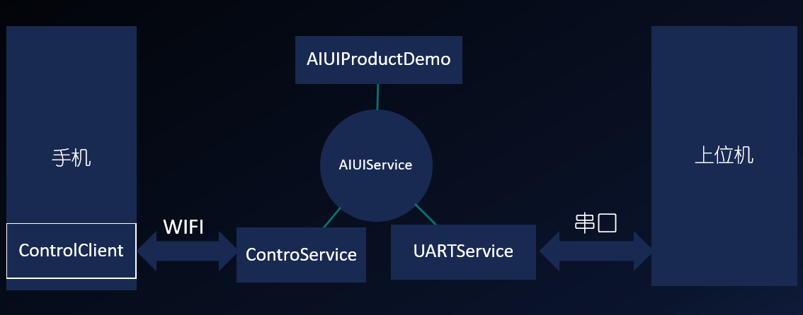

2.5 开发包¶
AIUI开发包为开发者提供了升级和集成AIUI需要的apk，依赖库及集成参考文档。
开发包下载需要登录到AIUI应用管理下载。
开发包中包含了最新版本的AIUI软件，通过点击bin下面自动卸载安装的脚本，重新配置AIUI，即可升级AIUI软件。
开发包中包含的应用的功能和相互关系如下:
2.5.1 Demo说明¶
sample下包含AIUIDemo和AIUIProductDemo，都是运行在AIUI评估板上。
- AIUIDemo
- 用于说明AIUI配置文件和接口的基本调用方法，该Demo需要界面操作，可以使用TotalControl或vysor进行操作
- AIUProductDemo
- AIUI评估板默认播报程序程序的源码工程，包含完整的交互处理，如评估板的灯光控制，歌曲播报处理等